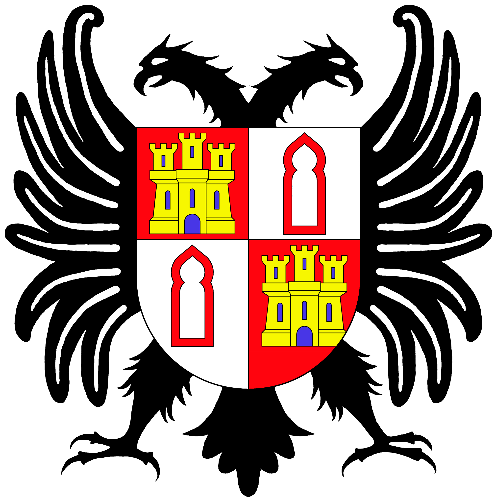

DARÍO MARCOS GARCÍA
PÁGINA PERSONAL
Imágen de perfil

Mi biografía
Nací en Burgos, el 15 de Julio de 2007.

Viví con mis padres y mi hermano durante 8 años en un pueblo cerca de la ciudad,
Arcos de la Llana

Después nos mudamos a la ciudad, más concretamente a Gamonal.
Todo este tiempo estudiaba en el colegio
Blanca de Castilla,
hasta que empezé la Eso que me cambié al IES Lopez de Mendoza, donde sigo estudiando.

Mis Hobbies
Me encanta hacer cualquier tipo de deporte, especialmente dedico mi tiempo a la natación.

Otra de mis mayores aficiones son los videojuegos, uno de los que más me gustan es el League Of Legends.